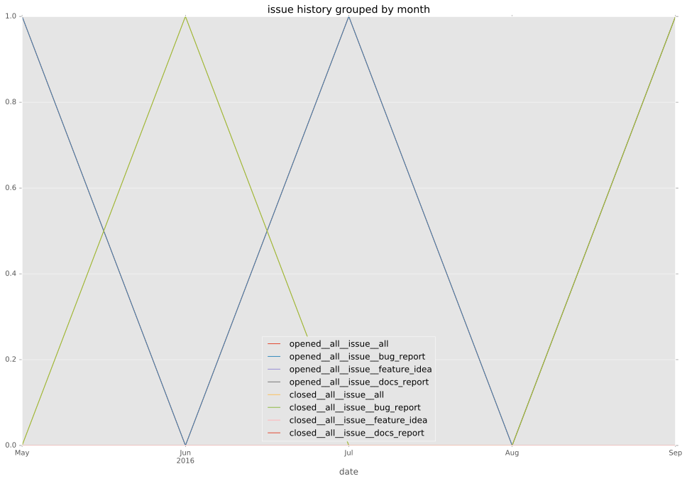
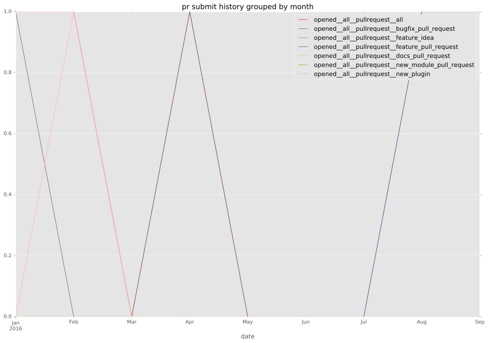

authors
- privateip
maintainers
- jedelman8
- GGabriele
- privateip
- gundalow
contributors
- Qalthos : 2 commits
- privateip : 49 commits
- wenottingham : 1 commits
- gundalow : 11 commits
total issue counts
feature pull request: 1
pullrequest: 4
bugfix pull request: 2
issue: 4
new plugin: 1
bug report: 4
issue history

pullrequest history

days open by issue type
bugfix pull request
count: 3
std: 1.15470053838
min: 0
max: 2
median: 0.0
mean: 0.666666666667
all
count: 10
std: 12.509551906
min: 0
max: 41
median: 4.0
mean: 9.4
pullrequest
count: 0
std: nan
min: nan
max: nan
median: nan
mean: nan
feature pull request
count: 2
std: 0.0
min: 15
max: 15
median: 15.0
mean: 15.0
issue
count: 0
std: nan
min: nan
max: nan
median: nan
mean: nan
new plugin
count: 2
std: 0.0
min: 4
max: 4
median: 4.0
mean: 4.0
bug report
count: 3
std: 20.4205778567
min: 2
max: 41
median: 11.0
mean: 18.0
closures grouped by total days open